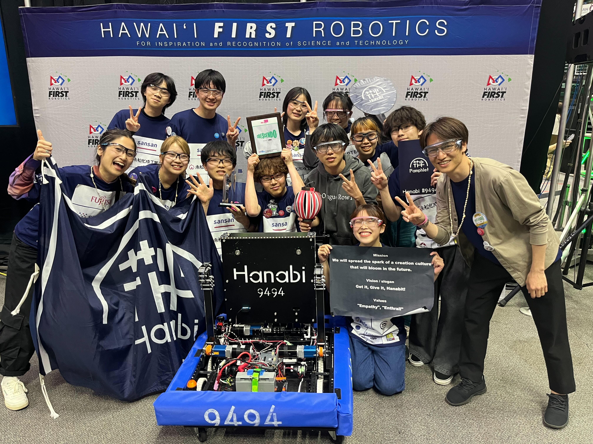

伝えたい視点
- なぜその活動に取り組んだのか
- どのような課題や葛藤があったのか
- 自分が担った役割と、周囲の巻き込み方
- 経験から何を学び、次にどうつなげるか
Portfolio / 2026
このポートフォリオは、特定の職種に寄せすぎず、 活動の立ち上げから現場理解、企画、運営、継続の仕組みづくりまでを一連で伝えるために制作しています。

About
神山まるごと高専4年の𠮷田尚翔です。 活動を立ち上げ、現場の声を聞き、関係者を巻き込みながら、企画・体験・仕組みとして形にすることに取り組んできました。
神山まるごと高専 × ソニー共創プロジェクト、FRC Team Hanabi、特定非営利活動法人燈の3つを軸に、 リサーチ、ヒアリング、プロトタイプ制作、ファンドレイジング、イベント企画、運営設計を実践しています。 現在は、思いを継続可能な活動に変えるための設計力をさらに高めていきたいと考えています。
Overview
思いを、活動として立ち上げる。活動を、人と仕組みで続ける。
Approach
利用者の行動や環境、困りごとの発生場面を把握する。
現場ごとの制約や優先順位を整理し、課題の輪郭を明確にする。
Figmaや実装試作で仮説を可視化し、認識をそろえる。
操作感や導線を検証し、体験として成立する形へ調整する。
Main Project
神山まるごと高専 × ソニー 共創プロジェクト

Main Project
神山まるごと高専の学生とソニー社員による共創プロジェクトとして、2025年7月から新規事業開発に関わっています。 学生2名の少人数で、主に6名ほどの社員の方々と継続的に議論しながら進めており、現在も活動中です。
私は週1回の定例に参加しつつ、週8時間程度を実働として、 リサーチ、ヒアリング、アプリUIの検討、FigmaやHTML / JavaScript、Reactを用いたプロトタイプ制作、 体験設計、チーム内議論、ヒアリング対象への説明・確認を横断的に担っています。
また、未成年でありながら企業の新規事業開発に関わる機会を得たことも、 この活動で得た大きな経験の一つです。
※プロジェクトの詳細、対象領域、成果物の具体情報は公開範囲に配慮して記載しています。
神山まるごと高専 × ソニー 共創プロジェクト
Research / Hearing
ヒアリングでは、町工場、社内の工場、福祉施設など、前提や環境の異なる現場の方々に話を聞きました。 普段の仕事、現状の課題、既存の工夫、プロトタイプの使用感などを聞きながら、 現場ごとに異なる制約や価値観を理解することを意識しました。
特に難しかったのは、初対面の相手が話しやすい雰囲気をつくること、 事前調査で得た知識に引っ張られずに聞くこと、そして仮説と事実の差分を丁寧に見分けることでした。
UX / Prototype
プロトタイプは、完成品として見せるためだけでなく、 チーム内議論とヒアリング対象への使用感確認を進めるための手段として制作しました。
| 手段 | 目的 |
|---|---|
| Figma | 画面構成、情報の見せ方、導線の検討 |
| HTML / JavaScript | 操作感やインタラクションの確認 |
| React | 実アプリに近い挙動での体験検証 |
設計の意図があっても「誰に対しての設計か」が大雑把になる場面があり、 フィードバックを受けて情報の優先順位や対象者像の具体性を見直す改善を繰り返しました。
Learning
もともと初対面の人と話すことに強い得意意識があったわけではありませんが、 プロジェクトを前に進めるためには相手に話してもらう必要がありました。 そのため、相手が話しやすい雰囲気づくりや、自然に深掘りできる質問の順序を意識して調整しました。
相手の言葉を受け取り、背景を想像し、仮説と事実を分けて設計へ反映することを繰り返す中で、 ユーザー体験を起点に考える姿勢が身につきました。自分にない視点を前提に設計することの重要性を実感しています。
良いアイデアやプロトタイプは、作る側の思いだけでは成立しません。 現場の声を聞き、使う人の状況を理解し、仮説と事実を分けて考えることで、 はじめて実際に使われる体験設計につながると学びました。
Project
Hanabi / FRC

Project
FRC Team Hanabiは、神山まるごと高専の学生を中心に立ち上げたFRCチームです。 私は2023年6月の活動開始時から創設メンバーとして参加し、運営、会計、スポンサー対応、 アウトリーチ、イベント企画に関わってきました。
Hanabiでの活動は今年で4年目になります。 ロボット制作に加え、チーム立ち上げ、活動方針の整理、資金調達、地域との関係づくりまで幅広く担ってきました。
この章では、単なるロボットチームとしてではなく、 チームビルディング、ファンドレイジング、アウトリーチ、安全設計、 継続できる組織への再設計という観点で経験をまとめています。
FRC Team Hanabi
Team Building
Hanabiは、興味のある学生が集まる形で始まり、初期は約25人で活動していました。 ただ、目指す方向や熱量には差があり、ロボット制作を重視するか、アウトリーチを重視するかで議論が生まれました。
その過程で、方針や関わり方の違いから離れるメンバーも出て、最終的に13人で活動を継続する体制になりました。 人数は減りましたが、同じ方向性を持つメンバーで役割を明確にできたことが、継続性につながったと感じています。
Rookie Inspiration Award

2023年6月から2024年4月の初年度は、技術メンター不在の中でロボット制作に取り組みながら、 32回のアウトリーチ活動を実施しました。ロボット性能には課題が残る一方、 行動量と継続的な発信が評価され、2024年ハワイ地区大会でRookie Inspiration Awardを受賞しました。
Fundraising / Partnership

Hanabiでは、活動継続のためのファンドレイジングにも注力しました。 1年目には約200社へメール等で連絡し、FRCの意義と学生主体の挑戦であることを伝えました。 継続的に対話した企業は、重複を含めると約80社にのぼります。
私は、協賛資料、メール文面、プレゼン資料、報告書の作成、アポイントメント調整、 企業プレゼンを担当しました。新設チームでも応援したいと思ってもらうために、 ロゴ掲載、SNS発信、Web掲載、メディア露出などのリターン設計を見直し続けました。
立ち上げ初期は、活動意義が外部に伝わりにくく、提案の通過率も安定しませんでした。 そこで、協賛資料の構成を「活動紹介」中心から「企業に返せる価値」中心へ見直し、 説明順序・数値の出し方・報告の頻度を整備しました。結果として、継続的な対話につながる企業が増え、 資金面での継続性を高めることができました。
宿泊型イベントを企画し、約30名規模の参加者を集めました。事前案内、当日オペレーション、終了後フォローまでを一連で設計しました。 さらに、単発で終わらせないために複数回のイベント企画にも展開し、各回30名程度の来場に対応できる運営体制を組みました。 参加者体験と運営負荷のバランスを調整する実践を通じて、企画を継続可能な形に落とし込む力が身につきました。
Hanabi Robot Contest 2024

| 開催日 | 2024年10月12日〜10月14日（2泊3日） |
|---|---|
| 会場 | 神山まるごと高専OFFICE |
| 対象・人数 | 中学生20名 |
| 参加条件 | 参加費無料（交通費は各自負担） |
| 教材・形式 | LEGO SPIKE / ビジュアルプログラミング / ポイント制競技 |
未経験でも参加できる入口にすること、短期間で「学ぶ・作る・競う」まで完結させること、 宿泊型ならではの非日常と仲間づくりを体験に組み込むことを重視しました。 制作だけで終わらせず、競技と修了証を通じて達成感や悔しさが次の挑戦につながる設計を行いました。
Safety / Operation
宿泊型イベントは責任範囲が広いため、学生だけで完結させない運営体制を設計しました。 学校スタッフの宿直、学校設備の活用、保険加入、同意取得、危険要素を抑えた教材選定を組み合わせ、 安全性と学習体験の両立を図りました。
私は発案、全体設計、学校スタッフとの調整、安全管理を担当し、 競技内容だけでなく安心して参加できる条件づくりに注力しました。
Impact / Continuation
参加者の中から神山まるごと高専へ進学した学生もおり、 Hanabiイベントが進路を考えるきっかけの一つになったと聞いています。 もともと志望していた参加者にとっても、学校やものづくりへの関心を深める入口になりました。
2025年度は株式会社SI&Cの協力のもと「Hanabi×SI&Cロボットコンテスト」として継続開催し、 今年度も開催予定です。徳島新聞など地域メディアの取材も継続して入り、活動の認知が広がっています。
Year 4 / Next
立ち上げから4年目を迎え、初期25人の一期生のうち現在も活動を続けているのは3人です。 初期メンバーとして、自分たちの代で終わらせない責任を強く感じています。
思いだけでは活動は続きません。まめな連絡、活動報告、約束を守ること、 相手にとってわかりやすく説明することの積み重ねが、応援され続ける土台になります。 熱量と同時に、継続できる仕組みを設計することが重要だと学びました。
Project
NPO法人燈
NPO Overview

特定非営利活動法人燈は、現在認証申請中のNPO法人です（縦覧期間は終了）。 私は理事および事務局長として設立準備と活動設計に関わっており、実働メンバーは主に4人です。
設立のきっかけはHanabiでの活動です。 学校の活動としてできることの大きさを感じる一方で、学校外の人や地域企業と継続的に関わるには 法人格を持つ必要があると考え、立ち上げを進めています。
目標は、日本国内のSTEM教育機会の格差を小さくする方向へ進むことです。 ただし、自分たちがすべてを解決するのではなく、参加者が次の学びや活動へ接続できる 「入口」を継続的に生み出すことを重視しています。
担当は企画、調整、事務、広報、協賛対応まで横断しています。 少人数体制のため、組織運営と現場実行を同時に進める実務力が求められるフェーズです。
NPO Activities
主な対象は、小学生から高校生までの学習者と、その保護者、学校外の学びを支える地域関係者です。 特に、STEMに触れたことがない人や、興味はあっても入口がわからない人に向けた設計を重視しています。
Hanabiで得た安全設計、参加者体験、関係者調整、報告の誠実さ、運営の仕組み化という学びを持ち込み、 参加者・運営者・支援者がそれぞれ関われる形を目指しています。 今後はイベント開催、登壇、オンライン配信、地域企業連携を組み合わせ、 学校外の学びを継続的に作る基盤へ発展させていきます。
Skills / Values